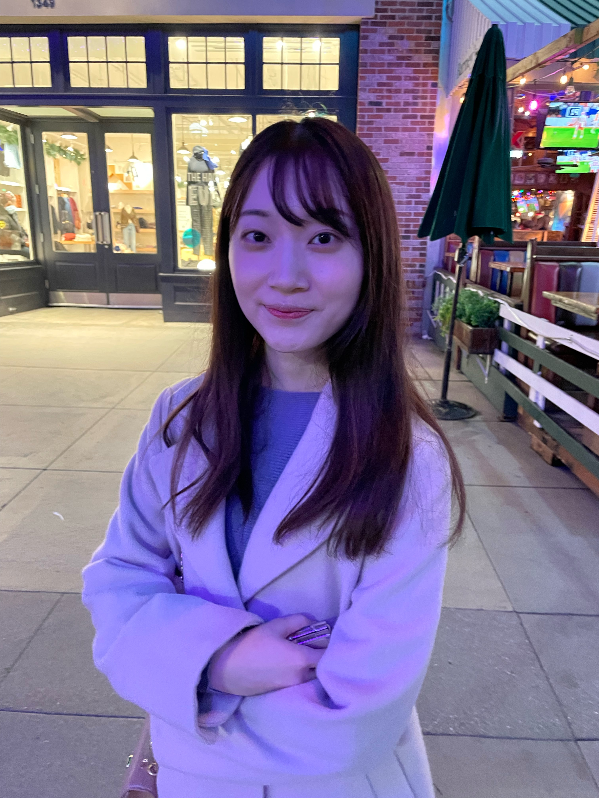

Saki Okubo

I'm a software engineer based in San Francisco Bay Area.
Work
- Logitsu AI (San Francisco Bay Area), (2024 - Present)
- Keywords: SwiftUI, Python, DynamoDB, S3, OpenSearch, EC2, Amazon EFS, Amazon RDS (MySQL), Flask API, Nginx, Gunicorn, SQLite, Firebase Analytics
- Developed a RAG backend from scratch (crawler, indexer, retriever) using OpenAI/Cohere API and built its custom evaluation framework.
- Built an iOS app using SwiftUI and integrated it with Firebase Analytics.
- Google (San Francisco Bay Area) - Google Cloud Security, Google Nest Speaker - Software Engineer (2022 - 2024)
- Keywords: Java, Kotlin, Golang, Python, SQL, Colab, gRPC, One Platform API, Flume, Google Cloud, Cloud Security, AI, Privacy
- Developed backend of a GCP configuration API using Java, gRPC.
- Implemented event threat detectors for Security Command Center with Java, Golang, and Python.
- Analyzed Google Cloud user’s activity data to detect anomalous event trends using SQL, Colab.
- Could Privacy Reviewer for AI and Security products.
- Microsoft (Tokyo, Japan) - Windows Touch Keyboard - Software Engineer (2020 - 2022)
- Keywords: C++, CX, XAML, UI programming, Windows
- Implemented text input personalization feature for Windows 11 with C++/CX, XAML.
- Developed gesture features for Windows touch keyboard with C++/CX, XAML.
- Implemented hint UI framework for touch keyboard with C++/CX, XAML.
Education
- Bachelor of Law, Keio University (2020)
Projects
- GPT2-JAX - JAX/Flax-based GPT-2 architecture implementation. Applied pre-trained weights for inference. Included a detailed explanation of theory and implementation.
- MoE-Visualization-GPT20B - Visualize MoE routing shifts in gpt-oss from two prompts and one question.
- Arduino-ODML - Identify bottle or can on ARDUINO NANO 33 BLE. Trained CNN with PyTorch. Converted the trained PyTorch model to ONNX → TensorFlow → TFLite. Deployed it to Arduino.
- PetDetect - End-to-end pet detection. Trained CNN with Oxford-IIIT Pet Dataset with PyTorch, converted the model to Core ML format, deployed it to iOS app and built web UI with Streamlit.
- privacy-sample - Wrote Overview of Privacy Techniques blog and created example code for it including different privacy and federated learning with MNIST dataset with PyTorch.
- CatCatCat -VisionOS app with a virtual 3D cat walking in your room.
- CalibGoPro - Calibrate a GoPro camera using opencv-python.
- sapipiru - oy browser built with Rust.
Awards
- Won Award as a team at "法制事務効率化賞(Legislative Affairs Efficiency Award)" at the Law & Digital Hackathon 2025 hosted by the Japan Digital Agency.
- ACM-ICPC 2017 Asia Tsukuba Regional
- ACM-ICPC 2016 Japan Online First-Round Contest Women's First Award
- CODE BLUE 2017 (international information security conference) U20 speaker and won a scholarship
- Supercomputing Contest 2014 First grade certification